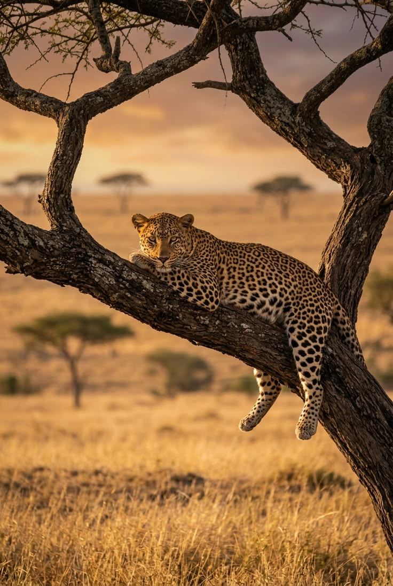

Authentic journeys rooted in culture, community, and unforgettable moments.
We connect travelers and collectors with authentic African craftsmanship and curated travel experiences. Our mission is to support artisans, promote sustainable tourism, and craft memorable journeys.


Our Story
Karibu Horizons began with a simple idea: travel should feel personal, not packaged. What started as a small group of Nairobi-based guides arranging weekend safaris for friends has grown into a full travel agency serving clients across Kenya and beyond. Along the way we never lost sight of why we started — to share the landscapes, culture, and craftsmanship of Africa with people who want more than a checklist of sights.
Our Mission & Vision

To design travel experiences that are authentic, sustainable, and unforgettable, while creating fair opportunities for the local guides, artisans, and communities we work with.

To be East Africa's most trusted name in curated travel — known for pairing world-class hospitality with genuine cultural connection.
Why Travel With Us

Licensed guides with deep knowledge of each route and landscape we offer.

Safari, coastal, or international plans built around your pace and interests.

A share of each booking supports artisan communities behind our handcrafted shop products.
Meet the Team

Over 12 years guiding across the Masai Mara and Amboseli.

Plans our Greece, Thailand, and beyond itineraries with a traveler-first lens.

The voice behind booking support and traveler assistance before and after every trip.
Karibu Horizons in Numbers
Travelers guided across Kenya and international destinations
Curated safari, coastal, and international packages
Serving travelers with locally-led experiences
Customer Stories
 Matt Brandon
Matt Brandon
"Wonderful service and authentic products. Delivery was prompt and the items were beautifully wrapped."
 Jena Karlis
Jena Karlis
"Our safari guide was patient and knew the parks intimately — a trip to remember."